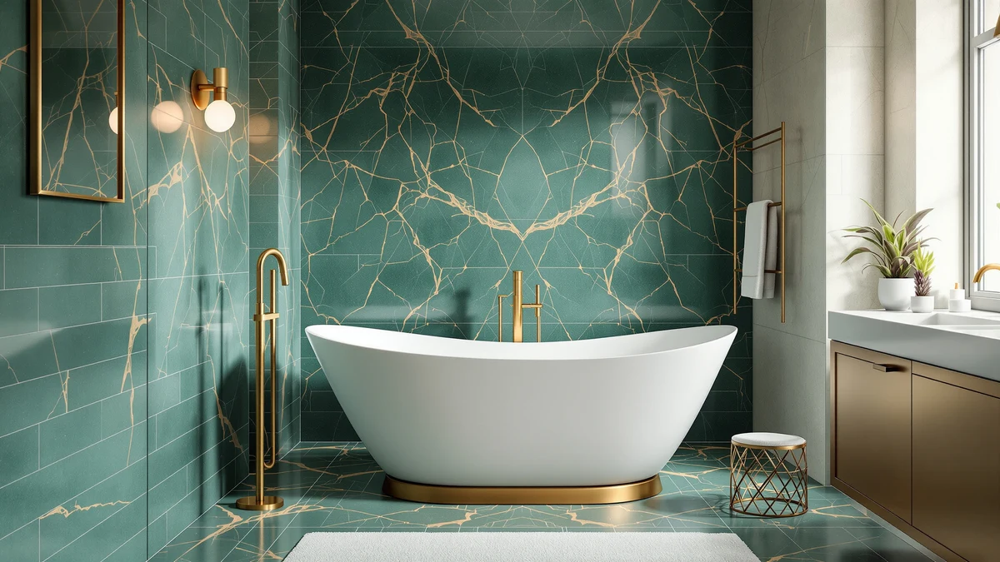

Things to Know Before You Buy
- Measure the room and the doorway. A tub can fit the floor space and still be impossible to carry in. Check every hallway turn and door width on the delivery path.
- The faucet is almost always sold separately. Budget another $150 to $400 for a floor-mount tub filler, plus rough-in plumbing.
- Acrylic is light and warm; cast iron holds heat but weighs 300 to 500 pounds. Heavy tubs need a reinforced floor and professional installation.
- Water depth matters more than length. Look for 14 to 15 inches of depth to the overflow for a true shoulder-covering soak.
- Drain placement is not adjustable after purchase. Center, left, or right must match your existing rough-in before you buy.
A freestanding tub is the rare bathroom upgrade you notice every single day, and it is also the one people most often get wrong. The photos make every model look the same: a sculptural white oval sitting in a sunlit room. What the photos hide is whether that tub will clear your doorway, hold heat long enough for a real soak, sit level on your floor, and connect to plumbing you already have. Those are the details that decide whether you love the tub or spend a year regretting it.
This guide walks through the four decisions that actually matter, in the order they matter: size, material, depth, and plumbing. Get those right and almost any well-reviewed tub will make you happy. Get them wrong and even a $2,500 cast iron showpiece becomes a cold, cramped, badly plumbed mistake. We keep the focus on practical trade-offs rather than showroom language, because a tub is a long-term purchase you will live with for a decade or more.
Prices below range from around $405 for a deep acrylic soaker to $2,599 for a genuine cast iron clawfoot, and the right choice depends far more on your room and your plumbing than on your budget. By the end you will know exactly what to measure, what to ask about, and where it is worth spending more.
What You Need to Know
Before you fall for a specific tub, understand the four variables that govern every freestanding purchase. Skip any one of them and you inherit a problem that is expensive or impossible to fix after delivery.
Size is first, and it is really two measurements. There is the footprint, which decides whether the tub fits your floor with enough walk-around clearance to actually clean it, and there is the interior soaking length, which is always shorter than the outside dimension because of the wall thickness and the sloped backrest. A 59-inch tub might give you only 48 inches of usable interior. Measure your room, then subtract space on all sides so you are not wedging the tub against a wall.
Material decides weight, warmth, price, and how the tub is installed. Acrylic is light and forgiving; cast iron is heavy and permanent. We cover the difference in detail in the next section, but it is worth knowing up front that material is the single biggest driver of both cost and installation complexity.
Depth is what separates a tub you lie down in from a tub you actually soak in. The number to find is the water depth to the overflow drain, not the overall height of the tub. Anything under about 14 inches leaves your shoulders cold. Fifteen inches or more covers most adults comfortably.
Plumbing is the piece buyers forget entirely. The tub is only part of the project. You will also need a faucet, the right drain location, and, for anything jetted or heated, an electrical connection. Plan all of it before you order.
Types and Categories
Freestanding tubs sort mainly by material, and the material tells you almost everything about how the tub will feel, what it costs, and how hard it is to install.
Acrylic
Acrylic is the default for a reason. A typical acrylic freestanding tub weighs somewhere between 60 and 120 pounds empty, which means two people can carry it in and set it on a standard floor without reinforcement. The surface feels warm to the touch the moment you get in, the price is friendly (many good models sit between $400 and $800), and a handy homeowner can often manage the install. The trade-off is heat retention: acrylic cools a bath faster than cast iron, so a long soak may need a top-up of hot water. It is also softer, so you have to clean it with non-abrasive products to keep the finish smooth.
Cast Iron
Cast iron is the heirloom option. A porcelain enamel finish over a thick iron shell holds heat beautifully, resists scratches and chips, and can look flawless for decades. That performance comes with real weight: 300 to 500 pounds empty, and considerably more once filled with water and a person. That almost always means checking (and often reinforcing) the floor structure, hiring professional installers, and paying $2,000 or more for the tub alone. If you want a clawfoot centerpiece that will outlast the rest of the bathroom, cast iron is worth it. If you want an easy weekend project, it is not.
Stone Resin and Solid Surface
A third category sits between the two. Stone resin (sometimes sold as solid surface or cast stone) blends crushed stone with resin to deliver cast-iron-like heat retention and a dense, matte, ultra-modern look, usually at a lighter weight than iron. It is a premium choice with premium pricing, and it is worth a look if you love the seamless contemporary aesthetic and can accommodate the cost.
How to Choose
With the categories clear, here is how to actually narrow down to one tub.
Start with the room, not the tub
Measure your available floor area, then plan for open space around the tub: enough to walk past it and to reach behind it for cleaning. As a rough guide, a 55 to 59-inch tub fits most standard bathrooms comfortably, while a 67-inch or longer model needs a genuinely large room and a clear path to carry it in. Do not forget the doorway, the hallway turns, and any tight stairwell on the delivery route. The most common heartbreak in this category is a tub that fits the room but not the door.
Match depth to how you bathe
If you are buying a freestanding tub primarily to soak, prioritize depth. Look for at least 14 to 15 inches of water depth to the overflow. Taller bathers should lean toward the deeper end of that range. If the tub is more of a design statement than a nightly soak, depth matters less and you can weight your decision toward size and style.
Let your floor and budget pick the material
On an upper floor or over a crawlspace, or if you simply want a manageable installation, acrylic is the sensible answer. On a solid ground-floor slab with the budget and the will to hire installers, cast iron rewards you with better heat retention and a finish that ages gracefully. Be honest about which situation you are in before you fall in love with a heavy tub.
Confirm the plumbing before you commit
Check where your drain rough-in sits (center, left, or right) and buy a tub whose drain matches, because that placement is fixed. Decide on a floor-mount or wall-mount faucet and confirm you have space and supply lines for it. And if you are drawn to a jetted or heated soaking tub, make sure you can run a proper GFCI-protected electrical connection to it.
Common Mistakes to Avoid
Nearly every freestanding tub regret traces back to one of these avoidable mistakes.
- Forgetting the faucet budget. The tub price you see rarely includes a faucet. A floor-mount tub filler typically runs $150 to $400, plus the plumbing work to supply it. Build that into your number from the start so the project does not balloon after the tub arrives.
- Buying too big for the room. A 72-inch tub looks spectacular online and cramped in a real bathroom with no room to walk around it. Measure first, then choose a size that leaves breathing room on every side.
- Ignoring drain placement. The drain location on the tub must line up with your existing rough-in. Order a center-drain tub for a left-drain rough-in and you are paying a plumber to move pipes, or returning a very heavy box.
- Skipping the floor-load check for cast iron. A cast iron tub full of water and a bather can exceed 800 pounds. On many floors that is fine; on some it is not. Verify the structure can take it before you order, not after.
- Assuming delivery equals installation. Freight usually drops the tub at your door or curb, not in your bathroom, and never connects it. Line up help to move it and a plumber to install it.
Care and Maintenance
A freestanding tub is easy to keep looking new if you match the cleaning to the material.
Acrylic
Acrylic scratches and dulls if you attack it with harsh chemicals or abrasive pads. Use a soft cloth and a non-abrasive, mildly soapy cleaner, and skip anything with bleach, acetone, or gritty scrubbing powder. A quick rinse and wipe after each use prevents soap scum and mineral spots from building up, which is far easier than removing them later. Done consistently, this keeps an acrylic surface glossy for years.
Cast Iron
Porcelain enamel over cast iron is far tougher and shrugs off most household cleaners, though it is still smart to avoid heavily abrasive scouring that can wear the gloss over decades. A rinse after use and an occasional gentle clean is all it takes. The enamel's durability is a big part of why a cast iron tub can look good for a generation.
Both materials
Whatever you buy, wipe standing water from the rim and around the drain to prevent mineral staining, and address hard-water spots early. A few seconds of care after each bath saves hours of restoration down the line.
Our Top Picks
To make this concrete, here are three tubs that anchor the range and show how the size, material, and budget decisions play out in practice, from an easy acrylic all-rounder to a genuine cast iron centerpiece.

Editor’s Pick
WOODBRIDGE 59" Acrylic Freestanding Bathtub
The best all-round choice: a warm, light 59-inch acrylic soaker that fits most bathrooms and installs without reinforcing the floor.
$719.00
Check Price on Amazon
Best Value
59" Acrylic Freestanding Bathtub Deep
The most soak for the money: a deep 59-inch acrylic tub that covers your shoulders at a price that leaves room in the budget for the faucet.
$404.99
Check Price on Amazon
Premium Choice
Signature Hardware 312541 Lena 72"
A genuine 72-inch cast iron clawfoot for a large room and a solid floor: unmatched heat retention and a finish built to last decades.
$2,599.00
Check Price on AmazonFrequently Asked Questions
Does a freestanding tub come with a faucet?
Almost never. The faucet is sold separately, and freestanding tubs usually need a floor-mount tub filler that runs about $150 to $400, plus the plumbing to supply it. Always budget for the faucet as a separate line item so the total cost does not surprise you.
Acrylic or cast iron: which should I buy?
Acrylic if you want a lighter, warmer, more affordable tub that installs easily on most floors, and cast iron if you want the best heat retention and a finish that lasts decades and you have a solid floor plus the budget for professional installation. Weight is the deciding factor: acrylic is 60 to 120 pounds, cast iron is 300 to 500 pounds empty.
What size freestanding tub fits a standard bathroom?
A 55 to 59-inch tub fits most standard bathrooms with room to walk around it. Models 67 inches and longer need a genuinely large room, and you must also confirm the tub will clear your doorways and hallways on the way in.
How deep should a soaking tub be?
Look for at least 14 to 15 inches of water depth to the overflow drain for a true shoulder-covering soak. Overall tub height is not the number to check; the water depth to the overflow is what determines how much of you stays submerged.
Do I need to reinforce my floor for a freestanding tub?
Usually not for acrylic, which is light enough for standard floors. Cast iron is another matter: filled with water and a bather it can exceed 800 pounds, so check and often reinforce the floor structure before installing one, especially on an upper level.
Does drain placement really matter?
Yes, and it is not adjustable. The tub's drain location (center, left, or right) has to match your existing plumbing rough-in. Ordering the wrong one means either moving pipes or returning a very heavy tub, so confirm your rough-in before you buy.
Verdict
Choosing a freestanding tub comes down to four honest measurements rather than a showroom feeling. Measure your room and your doorway, match the material to your floor and your budget, insist on real soaking depth, and plan the faucet and drain before you order. Do that and the tub almost picks itself.
For most people, a 59-inch acrylic soaker like the WOODBRIDGE hits the sweet spot of warmth, weight, price, and easy installation. If the budget is tight but you still want a deep soak, the sub-$405 deep acrylic option delivers where it counts. And if you have the room, the floor, and the budget for something that will outlast the rest of the bathroom, a genuine cast iron clawfoot is the splurge that keeps paying off. Whichever you choose, get the measurements and the plumbing right first, and the tub will reward you for years.